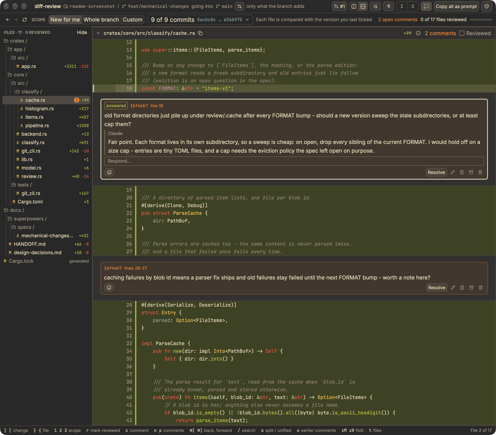

The code review app built for the agent loop.
diffie is a small, native desktop app for reviewing git changes across several commits or a whole branch - comment on lines and selections, hand the open comments to your coding agent, and resolve the answers. No browser, no server, no accounts.

Everything branch review should be
Web review tools are fine for one commit and lousy at ten. diffie is built for the branch - and for the agent that wrote half of it.
Three scopes, one view
New for me shows what changed since you last ticked each file. Whole branch shows everything. Custom shows only the commits you check. One scope rules the view.
A commit picker that skips
Pick commits from a dropdown - title, author, age and hash. Uncheck the noisy ones in the middle and read a combined diff of the rest.
Comments that survive rebases
Every comment is anchored by blame to the commit that wrote the line, and stores its lines as a snippet. Rewritten code tags the thread “code changed” - never “fixed”.
A thread your agent can join
diffie --prompt hands the open comments to your coding agent,
--reply threads its answer back under a robot badge. Resolving
stays yours.
Reviewed, with a memory
A tick stores the file's content id, not a commit, so it survives any rebase that leaves the file alone. A progress bar counts the files down.
Reviews you can email
Your review is one TOML file in .git/review/. No server, no
accounts. Send it to a colleague - their file next to yours shows up
read-only.
Names are links
Cmd-click a symbol to jump to its definition, Zed-style. Syntax-based and offline, no language server. Rust today, more languages as table entries.
Pull requests, on your click
Open a PR by number, publish your comments as one GitHub review, approve or request changes. The forge is only ever touched when you click.
Real captures, no mockups
Both captures come straight from diffie reviewing its own repository.
Comment, the agent answers, you resolve
Write a comment on a line, run your agent, and watch the answer land in the thread under a robot badge. Done and Won't fix resolve the thread; resolved threads fold away into a gutter marker.
Nine commits, one window
feat/mechanical-changes going into main: the file tree, the commit range, open-comment badges and the shortcut hints - one native window, no tabs to juggle.
Review the branch. Hand off the fixes.
diffie ships a skill for Claude Code and friends: say “review my changes”, comment, then say “address the review”.
-
01
You comment in diffie.
On a line or a selection. Each comment knows the commit that wrote the code and carries the snippet with it.
-
02
Your agent reads and answers.
diffie --promptprints the open comments, snippet included, without opening a window. The agent's reply lands in the thread, marked with a robot badge. -
03
You resolve - or you don't.
A rewritten line is tagged “code changed”, never “fixed”. Whether it's Done, Won't fix or a Follow-up is the reviewer's call alone.
# teach your agent the loop, once $ npx skills add sassman/diffie-rs # print the open comments for the agent $ diffie --prompt # the agent threads its answer under your comment $ diffie --reply 7f3a "Extracted the guard clause as suggested."
Get diffie
Homebrew, an installer script, or straight from source. Reviewing needs
only git; the pull-request features use the gh CLI.
# homebrew (macOS & Linux) $ brew install sassman/tap/diffie # or the installer script $ curl --proto '=https' --tlsv1.2 -LsSf \ https://github.com/sassman/diffie-rs/releases/latest/download/diffie-installer.sh | sh # or from source $ cargo install --locked --git https://github.com/sassman/diffie-rs diffie
Early alpha. macOS on Apple Silicon and Intel, Linux x86_64 (Vulkan driver required), Windows x86_64. Opened with no arguments, diffie reviews your uncommitted changes going into the checked-out branch.
Keyboard shortcuts
- Command palette
- ⌘P
- Next / previous change
- ][
- Next / previous file
- }{
- Switch scope
- 123
- Mark the file Reviewed
- r
- Comment the selection
- c
- Split or unified
- s
- Search the diff
- /
Built in the open, promised carefully
Two tracks, straight from the repository's ROADMAP.md: commitments, and ideas with no commitment attached. Ideas graduate only when they become promises.
- Nothing right now A promise here means it ships soon - the bar is deliberately high.
- Create a PR from the app a prefilled dialog, drafted by AI, tweakable to your own style
- Realtime agent interaction writing a comment triggers the agent; the app signals the answer
- Git basics through the palette commit the reviewed files, push the branch
- Switch source, target or PR in place like Zed's branch switcher - the PR flavour already shipped
- PR context see which comments are not yet published, per comment and overall
Want an idea promoted to a promise? Open an issue - requests steer priorities.
Questions, answered
What is diffie?
A native desktop app for reviewing git changes across several commits or a whole branch, with comments on lines and selections. Think GitHub's “Files changed” view, but not in a browser, built for multi-commit review, and wired into your coding agent. Written in Rust with GPUI, the GPU UI framework behind the Zed editor.
Is diffie free?
Yes - diffie is in early alpha and free to install, and the source lives at
github.com/sassman/diffie-rs. There are no accounts and no
subscriptions; your reviews are plain files on your own disk.
How is this different from reviewing on GitHub?
Three things. Scopes: review the whole branch, only what's new since your last pass, or a hand-picked set of commits - GitHub shows one flat diff. Anchoring: comments pin to the commit that wrote the line, so they survive rebases and follow rewrites. And the loop: your coding agent can read the review and answer in the thread, locally, before anything reaches a forge.
When you do work a GitHub pull request, diffie --pr pins its
exact commits and can publish your comments as one review - one
notification, only when you click.
Does diffie touch my repository?
Never. diffie writes nothing to your objects, index, refs, config or working
tree. The only files it writes are review files under
.git/review/ - inside the git directory, so they can't be
committed by accident. The one exception: picking a pull request whose
commits aren't local yet runs a single git fetch, on that
explicit click.
What are the requirements?
git, and a machine to run it on: macOS (Apple Silicon and Intel) or Linux
x86_64 with a Vulkan driver. A Windows build exists but hasn't been put
through its paces yet. The pull-request features need the
gh CLI; everything else works offline.
How do I share a review with a colleague?
Send the file. Your review is one TOML file named after you; dropped into a
colleague's .git/review/ folder it shows up read-only next to
their own. Files never conflict, because every reviewer writes only their
own - reactions to someone else's comment go in your file, by comment id.